Bruit en milieu de travail
Le Bruit en milieu de travail est un agresseur physique majeur en milieu minier. La VEA québécoise est 85 dBA (Lex,8h) avec un facteur de bissection de 3 dB. La crête doit rester sous 140 dBC. Les articles 130 à 141 du RSST encadrent les obligations (révisés en 2023). La surdité professionnelle reste l'une des lésions reconnues les plus fréquentes en mine.
Table des matières
- Unités et concepts
- Effets sur la santé
- Réglementation RSST
- Évaluation : sonométrie vs dosimétrie
- Calcul de la dose et Lex,8h
- Moyens de contrôle
- Protecteurs auditifs
- Application terrain
- Ressources
Unités et concepts
| Unité | Description |
|---|---|
| Décibel (dB) | Échelle logarithmique de pression sonore |
| dBA | Pondération A, simule la sensibilité de l'oreille humaine |
| dBC | Pondération C, pour bruits de crête |
| Pa | Pression sonore |
| W | Puissance acoustique |
Addition de bruits en dB : non linéaire. 2 sources à 85 dB ne font pas 170 dB mais ~88 dB.
Effets sur la santé
L'anatomie de l'oreille permet de comprendre les sites d'atteinte du bruit.
{kind=link}
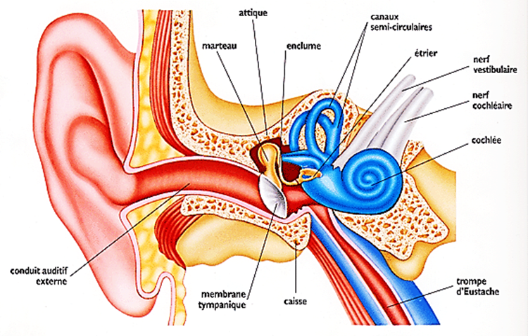
Toucher l'image pour l'agrandir{kind=link}
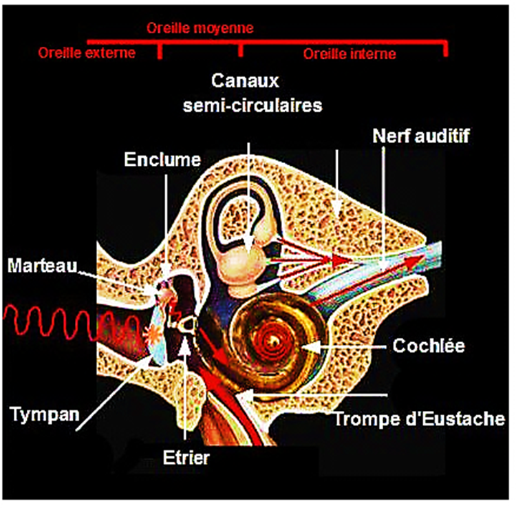
Toucher l'image pour l'agrandirAuditifs
- Fatigue auditive (temporaire, récupération en quelques heures).
- Surdité professionnelle (permanente, perception ou transmission). Voir Maladies professionnelles en mine.
- Acouphènes.
Non auditifs
- Physiologiques : stress, hypertension, tachycardie.
- Psychologiques : irritation, troubles du sommeil, baisse de concentration. Lien avec les RPS, voir aussi le wiki psychosociale frère : Risques Psychosociaux (RPS) et Santé Mentale.
Effet ototoxique : combinaison du bruit avec certains solvants (toluène, styrène) ou vibrations peut aggraver la perte auditive.
Réglementation RSST
Articles 130 à 141 du RSST, avec mise à jour majeure depuis 2023.
Valeurs limites (art. 131)
- Lex,8h = 85 dBA (niveau d'exposition quotidienne).
- Lp,Cpeak = 140 dBC (crête).
{kind=link}
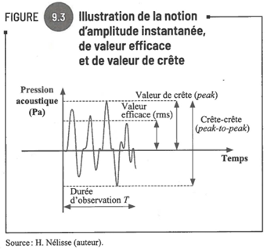
Toucher l'image pour l'agrandirObligations clés
| Art. | Obligation |
|---|---|
| 132 | Privilégier l'équipement moins bruyant à l'achat |
| 133 | Évaluer aux 5 ans toute situation dépassant les VEA et normes RSST |
| 134 | Identifier les changements dans les 30 jours |
| 135 | Mettre en œuvre des moyens raisonnables (élimination, encoffrement, isolation) |
| 136-137 | Réduire le temps d'exposition ou fournir des protecteurs auditifs |
| 138-140 | Mesurer selon CSA Z107-56-13 ou ISO 9612 |
| 141 | Fournir des protecteurs conformes à CSA Z94.2-2014, avec formation |
Le tableau RSST sur la réduction du temps d'exposition (art. 137).
{kind=link}
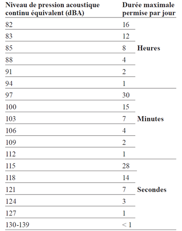
Toucher l'image pour l'agrandirÉvaluation : sonométrie vs dosimétrie
| Méthode | Usage |
|---|---|
| Sonomètre | Mesure courte durée, caractérisation des sources, cartographie sonore, analyse par bandes |
| Dosimètre | Enregistrement en temps réel sur le quart, calcul d'une dose, exposition de travailleurs mobiles |
Instruments conformes à CSA Z107-56-13. Calculette CNESST en ligne pour bruits multiples.
Programmation typique d'un dosimètre.
{kind=link}
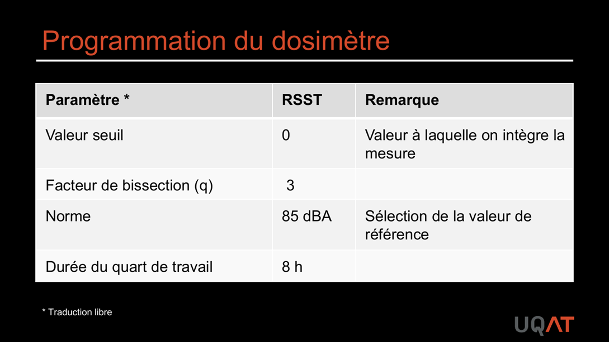
Toucher l'image pour l'agrandirExemple de profil de mesures par dosimètre.
{kind=link}
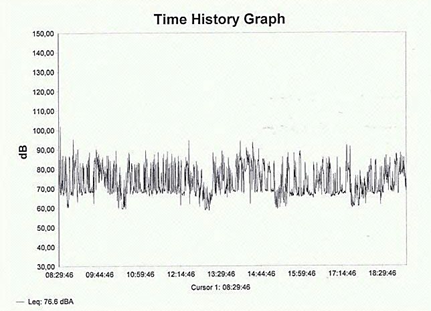
Toucher l'image pour l'agrandirCalcul de la dose et Lex,8h
Les formules ISO et CSA se résument dans le schéma suivant.
{kind=link}
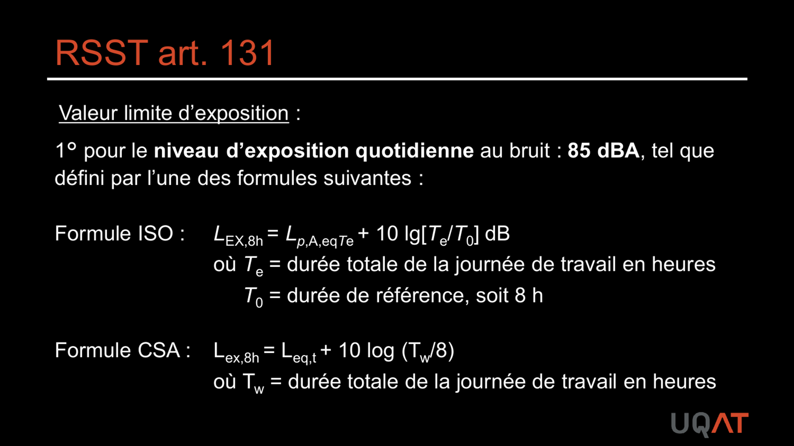
Toucher l'image pour l'agrandirFormule ISO (facteur de bissection 3 dB)
$$L_{eq} = 10 \log \left( \frac{1}{8} \sum t_i \cdot 10^{L_i/10} \right)$$
Exemple : 2 h à 86 dBA, 1 h à 96 dBA, 4 h à 90 dBA, 1 h à 70 dBA donne Leq = 90 dBA.
Ajustement à 8 h (CSA Z107-56)
$$L_{ex,8h} = L_{eq,t} + 10 \log \left( \frac{T_w}{8} \right)$$
où $T_w$ est la durée du quart en heures.
{kind=link}
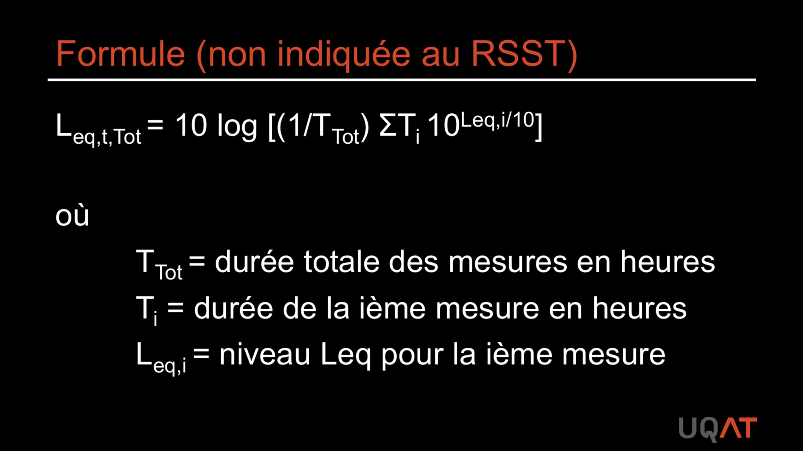
Toucher l'image pour l'agrandirExemple : Leq,t = 88 dBA pendant 12 h donne Lex,8h = 88 + 1,76 = 90 dBA.
Pour quart non standard, le bruit est ajusté comme les contaminants chimiques (voir Calculs d'exposition et ajustements TPN).
Moyens de contrôle
Suivre la Hiérarchie des moyens de prévention. La chaîne source-milieu-récepteur structure l'analyse.
{kind=link}
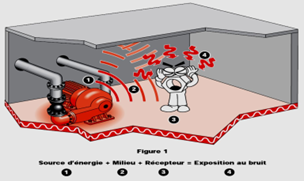
Toucher l'image pour l'agrandir- Élimination ou substitution : équipement moins bruyant, hydraulique vs pneumatique.
- Isolement : encoffrement, écrans acoustiques, cabines, recouvrement des parois.
{kind=link}
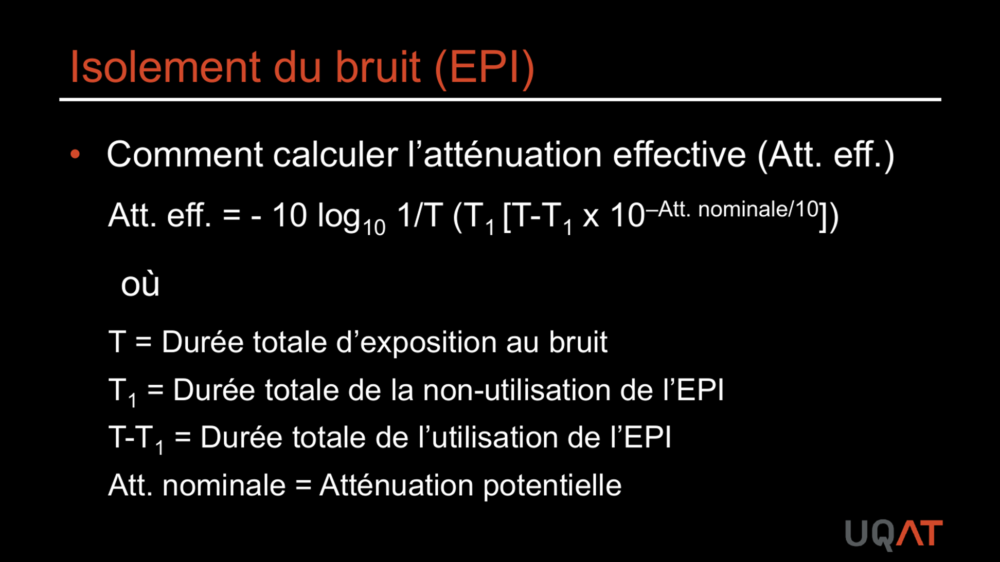
Toucher l'image pour l'agrandir- Administratif : rotation, planification, critères d'achats, programme de protection de l'ouïe.
- EPI : bouchons ou serre-tête (coquilles). Voir Protection respiratoire (APR) pour les protections respiratoires associées.
Protecteurs auditifs
Normes : CSA Z94.2-14.
- Bouchons : meilleurs en basses fréquences, < 100 dBA, jetables, peu fiables si mal posés.
- Coquilles (serre-tête) : meilleurs en hautes fréquences, > 100 dBA, plus durables.
- À partir de 105 dBA : double protection (bouchons + coquilles), ajouter 5 dB à l'équipement le plus efficace.
Calcul d'atténuation (approche NIOSH)
$$dBA_{exposition} = dBA_{ambiant} - (0{,}5 \times IRB)$$
50 % d'efficacité pour les bouchons, 75 % pour les coquilles.
Lacunes fréquentes dans l'utilisation des protecteurs.
{kind=link}
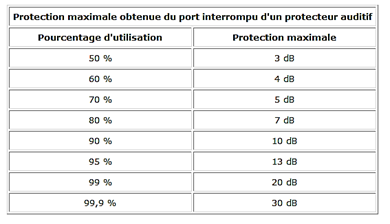
Toucher l'image pour l'agrandirProgramme structuré de prévention de la perte auditive selon CSA Z1007-16.
{kind=link}
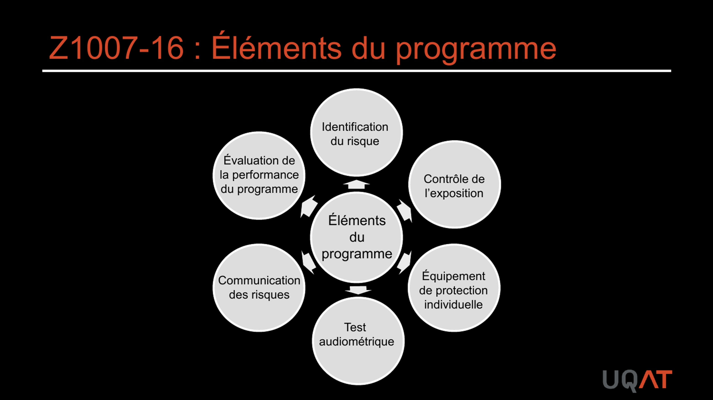
Toucher l'image pour l'agrandirApplication terrain
Postes typiquement exposés en mine
| Poste | Niveau typique | Particularités |
|---|---|---|
| Foreur, profil RPS et leadership de chantier (jumbo, longue-haleine) | 95-105 dBA | Bruit + vibrations + DPM |
| Aide-foreur, profil RPS, chargement explosifs | 90-100 dBA | Variabilité élevée selon tâches |
| Opérateur chargeuse, camion souterrain | 85-95 dBA en cabine | Cabines insonorisées efficaces |
| Opérateur concasseur | 90-105 dBA | Bruit impulsif fréquent |
| Mécanicien atelier | 85-95 dBA | Outils pneumatiques, soudage |
| Boutefeu | Crêtes > 140 dBC | Délai d'éloignement codifié |
Leviers spécifiques au secteur minier
- Achat orienté faible bruit (critère contractuel).
- Cabines insonorisées et étanches sur engins miniers.
- Maintenance des silencieux d'échappement.
- Rotation de poste pour limiter le Lex,8h sur quart de 12 h.
- Programme de surveillance audiométrique structuré (CSA Z107.6, CNESST).
- Coordination avec gestion de la fatigue : la perte auditive peut amplifier l'isolement de cabine et la fatigue cognitive. Voir aussi le wiki psychosociale frère : Milieu Minier et FIFO.
Ressources
| Document | Type | Source |
|---|---|---|
| CSA Z94.2-14 (protecteurs auditifs) | Norme | CSA |
| CSA Z107-56-13 (mesure) | Norme | CSA |
| CSA Z1007 (programme) | Norme | CSA |
| Guide bruit | Guide | IRSST |
| Calculette dose bruit | Outil | CNESST, rôles et pouvoirs |
Articles wiki connexes